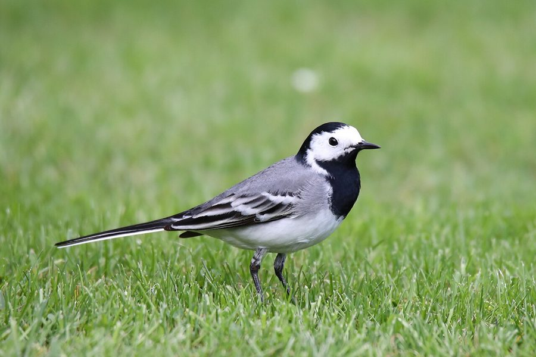

खंजनWhite Wagtail
Motacilla alba · Motacillidae · BRD-0013

- Scientific name
- Motacilla alba (Linnaeus, 1758)
- Family
- Motacillidae
- Hindi
- खंजन / धोबी चिड़िया
- Status here
- native
- IUCN
- LC
When to look कब देखें
Expected mainly in January, February, March, October, November, December.
खंजन / White Wagtail
Motacilla alba Linnaeus, 1758 — Motacillidae
खंजन — वह पक्षी जो उत्तर से आता है, पूर्वी UP के खेतों में सर्दी काटता है, और हर किसी की आँखों को भाता है। काला-सफेद-स्लेटी रंग, लंबी पूँछ जो हर कदम पर हिलती रहती है — इसीलिए नाम "हिलदुमार"। हिंदी काव्य में "खंजन" काली आँखों की उपमा है — इस पक्षी की आँखें उतनी ही चमकदार। अक्टूबर की पहली ठंड के साथ यह आता है; मार्च की धूप के साथ लौट जाता है।
हिंदी परिचय Hindi Overview
खंजन (Motacilla alba) वह पक्षी है जो उत्तर से आता है, पूर्वी UP के खेतों में सर्दी काटता है, और हर किसी की आँखों को भाता है। काला-सफेद-स्लेटी रंग, लंबी पूँछ जो हर कदम पर हिलती रहती है — इसीलिए नाम "हिलदुमार"। हिंदी काव्य में "खंजन" काली आँखों की उपमा है — इस पक्षी की आँखें उतनी ही चमकदार। अक्टूबर की पहली ठंड के साथ यह आता है; मार्च की धूप के साथ लौट जाता है।
Quick Identification त्वरित पहचान
| Feature | Description |
|---|---|
| Size | Small, slender bird (16–19 cm total length including long tail); sparrow-sized |
| Tail | Very long tail, constantly pumped up and down (wagged) while walking |
| Plumage | Black-and-white face mask; black crown, nape, and bib; grey upperparts; white underparts |
| Bare parts | Slender, straight black bill; black legs |
| Gait | Walks and runs rapidly on the ground; bobs head and never hops |
| Flight call | High-pitched, double-syllabled chis-sik or tslee-weet given in flight |
Field tip: Any slender black, grey, and white bird running along a muddy pond bank or ploughed field while constantly pumping its tail up and down is a White Wagtail. They are winter visitors, present from October to March.
Morphology आकारिकी
Biometrics (subspecies personata, northern India — the form in eastern UP):
| Measurement | Range |
|---|---|
| Total length | 160–190 mm |
| Wing (flattened chord) | 85–97 mm |
| Tail | 80–98 mm |
| Tarsus | 21–24 mm |
| Bill (culmen from base) | 13–15 mm |
| Weight | 18–26 g |
Body: Slender, elongated build. Legs long relative to body — suited for ground walking. Tail disproportionately long (~50% of total length), constantly pumped in vertical waves.
Plumage (winter in UP): The most common subspecies seen in eastern UP fields is M. a. personata (Masked Wagtail) — black mask extending from crown through cheeks; white forehead; grey back and rump; black bib; white underparts; white outer tail feathers visible in flight. M. a. alba (typical race) has white face and smaller bib.
Juvenile/first-winter: Browner and less contrasted — grey-brown where adults are black; buff-tinged underparts. Still shows tail-wagging behaviour.
Vocalisations
The White Wagtail calls frequently in flight or when flushed.
- Flight call: A sharp, high-pitched chis-sik or tslee-weet, given singly or in doublets.
- Alarm whistle: A sharp, thin tsee whistle given when flushed by a ground predator.
- Subsong: A soft, warbling song containing trills and chattering notes, rarely heard on the wintering grounds in early spring.
Ecological Role पारिस्थितिक भूमिका
Ground insectivore: White Wagtails feed almost entirely on small invertebrates caught on the ground:
- Small beetles, ants, flies, mosquitoes
- Earthworms and soil larvae (important in ploughed fields)
- Aquatic invertebrates near pond edges
- Occasionally berries or small seeds
Agriculture commensal: The species actively follows ploughing — walking 1–2 m behind the plough to pick up exposed soil invertebrates (beetle larvae, earthworms, pupae). A single bird may follow the same plough all day. This is a well-documented behaviour in winter paddy and wheat fields across the Indo-Gangetic plain.
Wetland insect control: At pond edges, wagtails consume aquatic insect larvae including mosquito larvae — a minor but real public health service.
Winter resident ecology: White Wagtails establish individual winter territories (a section of stream bank, pond edge, or field) that they defend from other wagtails. Territory size is 50–200 m of linear water edge. This territorial winter residency means the same bird returns to the same field or pond edge year after year.
Life Cycle / Phenology जीवन चक्र
- October: First individuals arrive from north; establish winter territories near water.
- November–February: Peak abundance; flocks roosting communally in reed beds and trees near water.
- March: Numbers decline; individuals begin northward movement.
- April: Last individuals leave; absent from eastern UP.
- May–August: Breeding season in Himalayas (above 1,500 m), Central Asia, and Europe; nests in rock crevices.
- September: Post-breeding dispersal southward begins.
Migration: White Wagtails are partial long-distance migrants. Populations breeding in Europe and Central Asia winter in sub-Saharan Africa and South Asia. Himalayan breeding populations winter in the Indo-Gangetic plains including eastern UP. Night-time migration — detected on moonlit nights flying over fields.
Communal roosts: In winter, wagtails roost communally in large numbers (10–500+ individuals) in dense reed beds, sugarcane fields, and large bushes near water — returning to the same roost nightly.
Host Plants or Prey आहार
Primary winter diet:
- Soil larvae and pupae exposed during field ploughing
- Small beetles, ants, flies, and midges
- Earthworms (Metaphire posthuma) in damp fields
- Aquatic insect larvae from pond margins
Predators / Natural Enemies शत्रु
- Shikra (Accipiter badius) — primary avian predator in agricultural fields
- Feral Cats — ambush birds feeding in courtyards or pond banks
- Indian Rat Snake (Ptyas mucosa) — hunts birds near agricultural margins
- Nest predators (in breeding grounds only): weasels, martens, and corvids
Agricultural / Human Relevance कृषि एवं मानव उपयोग
Insect control: Follows ploughing and benefits from agricultural activity — a useful commensal in wheat and paddy cultivation by consuming soil pests.
Cultural significance — "खंजन" in poetry: The name khanjan (or khanjanakshi — "she whose eyes are like khanjan") is a classical literary metaphor for beautiful, dark, restless eyes. Used extensively in Sanskrit, Hindi, and Urdu poetry (Kalidas, Tulsidas, Kabir, Mir Taqi Mir). The bird's quick-darting black eye perfectly matches the metaphor. Recognising this bird gives cultural context to classical literature.
Winter phenology indicator: Farmers traditionally associate the arrival of wagtails in October with the onset of rabi (winter crop) season — an informal bioindicator of seasonal shift.
Expected Locally स्थानीय रूप से अपेक्षित
Not a field record. Written from published accounts for eastern Uttar Pradesh. No confirmed local sighting yet — if you have seen it, that is what the atlas needs.
अभी तक स्थानीय पुष्टि नहीं। यह विवरण प्रकाशित स्रोतों से है, किसी अवलोकन से नहीं।
A very common winter visitor throughout Basti district. Wagtails are seen walking rapidly in freshly ploughed wheat fields and harvested paddy stubble. They are frequently observed around dhobi ghats (riverbanks and pond banks where washing is done). They disappear completely by the end of March.
Distribution वितरण
Global range: Widespread across Europe, Asia, and North Africa; breeds in northern temperate and arctic zones, migrating south to winter in Africa, the Middle East, and South and Southeast Asia.
In India: Common winter visitor across northern and central India; breeds in the Himalayas above 1,500 m elevation.
In Uttar Pradesh: Common winter visitor across all districts, present from October to March.
In Basti district / eastern UP: Common winter visitor; found along Saryu and Rapti rivers, in paddy stubble, and around village ponds.
Range notes: No significant range changes documented.
Research Questions शोध प्रश्न
- What is the winter territory fidelity of White Wagtails in Basti district — do individual birds return to the same field or pond edge in successive winters?
- Where are the communal winter roost sites along Saryu and Rapti river margins — and what is the peak roost size?
- Does the arrival date of White Wagtails in eastern UP correlate with specific temperature thresholds in the breeding areas (a climate change indicator)?
- Do wagtails following ploughing in eastern UP preferentially target specific soil invertebrate prey — and what is the quantitative pest suppression benefit?
- Which subspecies (M. a. alba vs. M. a. personata) predominate in Basti district — and does the ratio shift across the winter?
Similar Species मिलती-जुलती प्रजातियाँ
| Species | How to distinguish |
|---|---|
| Motacilla flava (Yellow Wagtail) | Yellow underparts; olive-green back; also a winter visitor in eastern UP paddy fields |
| Motacilla cinerea (Grey Wagtail) | Grey back + yellow rump; longer tail; prefers fast-flowing streams not flat fields |
| Motacilla maderaspatensis (White-browed Wagtail) | Year-round resident; larger; bold white supercilium; common near rivers; does NOT migrate |
Taxonomy & Classification वर्गीकरण
Original description. Motacilla alba was described by Carl Linnaeus in 1758 in Systema Naturae, 10th Edition, page 185. Type locality: Sweden. The genus name Motacilla is derived from the Latin motare (to move) and cilla (formerly thought to mean tail), referring to the tail-wagging behavior.
Subspecies. Nine subspecies are currently recognised:
| Subspecies | Authority | Range | Notes |
|---|---|---|---|
| M. a. personata | Gould, 1861 | Central Asia, Himalayas (wintering to South Asia) | Eastern UP form — Masked Wagtail; black mask, white forehead |
| M. a. alba | Linnaeus, 1758 | Europe, Iceland to Ural Mountains | Nominate form; white cheeks |
| M. a. dukhunensis | Sykes, 1832 | West Siberia to Caucasus (wintering to India) | Indian White Wagtail; white face, black bib |
| M. a. ocularis | Swinhoe, 1860 | East Siberia (wintering to Southeast Asia) | Streak-eyed Wagtail; black eye-stripe |
| M. a. baicalensis | Swinhoe, 1871 | Lake Baikal, Mongolia | White wing coverts |
| M. a. leucopsis | Gould, 1837 | East Asia, China (wintering to Southeast Asia) | Amur Wagtail; black back, white face |
| M. a. yarrellii | Gould, 1837 | Great Britain, Ireland | Pied Wagtail; dark slate-black back |
| M. a. subpersonata | Meade-Waldo, 1901 | Morocco | Moroccan Wagtail; resident |
| M. a. lugens | Gloger, 1829 | Kamchatka, Japan | Black-backed Wagtail |
Family and order placement. Belongs to the order Passeriformes, family Motacillidae (wagtails and pipits). The family Motacillidae contains around 65 species.
Phylogenetic notes. Systematic relationships within the Motacilla alba complex are complex, with high hybridisation in contact zones, leading some authors to lump or split various forms as distinct species.
IUCN status rationale. Assessed as Least Concern (LC) by the IUCN Red List. It has a vast global population and range, and is highly adaptable to human agricultural environments.
Photo Gallery फ़ोटो गैलरी
Note: Add field photos tomedia/species/white_wagtail/
फोटो निर्देश: धान की खूँटी (paddy stubble) में चरते हुए खंजन, लंबी पूँछ को हिलाने की क्रिया, और तालाब के किनारे।
Photos needed आवश्यक फोटो
- [ ] Walking in paddy stubble (धान की खूँटी में खंजन)
- [ ] Tail bobbing detail (पूँछ हिलाते हुए)
- [ ] Foraging behind tractor/plough (जुताई के पीछे)
- [ ] Roosting flock in sugarcane edge (गन्ने के पास झुंड)
Atlas Connections संबंधित प्रजातियाँ
- Paddy — harvested paddy stubble fields are primary winter foraging habitat (FLR-0014)
- Indian Pond Heron — shares pond-edge habitat in winter; different feeding niche (wagtail = ground insects; heron = fish/frogs) (BRD-0004)
- Indian Common Earthworm — plough-exposed earthworms are important wagtail prey in tilled fields (SFL-0002)
References सन्दर्भ
- Linnaeus, C. (1758). Systema Naturae per regna tria naturae. Editio Decima, Reformata. Laurentii Salvii, Holmiae, p. 185. [original description]
- Gould, J. (1861). Birds of Asia. Vol. 4. London. [description of personata]
- Ali, S. & Ripley, S.D. (1987). Handbook of the Birds of India and Pakistan. Vol. 9. Oxford University Press, New Delhi.
- Grimmett, R., Inskipp, C. & Inskipp, T. (2011). Birds of the Indian Subcontinent. 2nd ed. Christopher Helm, London.
- Alström, P. & Mild, K. (2003). Pipits and Wagtails of Europe, Asia and North America. Christopher Helm, London.
- BirdLife International (2024). Motacilla alba. IUCN Red List of Threatened Species. Ver. 2024.
- GBIF Occurrence Data — Motacilla alba, Uttar Pradesh (2010–2025).
Source file: species/fauna/birds/white_wagtail.md